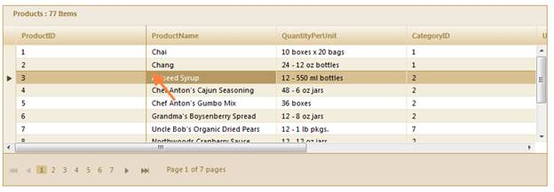

Use the following code snippet in the client side to freeze panes based on the current selection.
|
[JavaScript]
var grid = $find("MyGrid"); grid.freezePanes(); |
If the third row and second column of the grid is selected, freeze panes will keep the first two rows and first column visble as always while the grid is scrolling.

Figure 279: Rows and Columns are Frozen Based on Selection